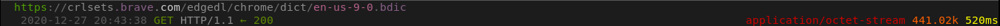

Brave
O Navegador Brave é um fork do Chromium com muitos recursos interessantes que não são encontrados em outros lugares, como Adblock integrado e outras extensões, proteção contra impressão digital, um menu de preferências mais limpo em comparação com outros forks do Chrome e a capacidade (opcional) de apoio automático (pago) aos websites que você visita. Os desenvolvedores o descrevem como "Um Navegador que se preocupa com você."[1] com as proteções de privacidade integradas.
Nível de Spyware: Alto
O Brave é um software de atualização automática, usa o Google como mecanismo de pesquisa padrão, possui telemetria embutida e até um feed de notícias ao estilo RSS semelhante ao Firefox Pocket. Essas não são coisas que vêm à mente se alguém imagina um navegador focado em privacidade.
Atualizações automáticas
O Brave verificará se há atualizações toda vez que você o executar, e você não conseguirá desativá-lo no navegador. No entanto, não está na lista de prioridades do Brave adicionar uma opção para tal.[2] A razão pela qual não ser prioridade seria porque já se passou mais de um ano e ainda não houve uma implementação.
Brave tem telemetria integrada
Durante a execução, o Brave fará muitas requisições ao domínio p3a.brave.com como telemetria. Eles alegam que armazenam os dados coletados por vários dias.[8] Esse recurso é uma opção que pode ser desativada. Esta opção pode ser desativada aqui.
Brave Today
O Brave agora tem um novo recurso semelhante ao Firefox Pocket chamado Brave Today. Se você não sabe o que é o Firefox Pocket, é basicamente um feed de notícias ao estilo RSS que é mostrado em todas novas guias em branco. Infelizmente, este recurso do Brave é uma ferramenta de cadastro automático e envia muitas solicitações para o servidor do Brave. Não pode ser desativado por si só, mas definir as guias para uma página em branco parece interromper as requisições.
SafeBrowsing
O Brave usa o SafeBrowsing. É um recurso que tenta "proteger" o usuário de sites e extensões potencialmente inseguros. No entanto, ele envia requisições para buscar as informações necessárias. O SafeBrowsing do Brave é desenvolvido pelo Google.[10] Esta opção pode ser desativada aqui.
Recompensas Brave
O Brave tem um programa de recompensas. Você pode encontrar mais informações sobre isso aqui.[3] À primeira vista, parece que o programa de recompensas é opcional, mas o navegador faz requisições para esses domínios, indenpendente de você se inscrever ou não:
rewards.brave.com
api.rewards.brave.com
grant.rewards.brave.com
Uma atualização rápida: essas requisições foram relatadas como um bug, e na maioria das vezes, foram corrigidas (com algumas excessões). Vou remover esta seção assim que o bug for completamente corrigido.[12]
Requisições que valem a pena ser mencionadas
O Brave na primeira execução envia uma requisição para buscar a biblioteca usada para verificar erros de ortografia:
O Brave na inicialização envia uma requisição para variations.brave.com. O Brave usa isso para ativar e desativar recursos. Ainda não há como desabilitar isso.[11]
O Brave busca a lista de afiliados através de laptop-updates.brave.com:
O Brave faz uma requisição para static1.brave.com uma vez ou outra, o que parece ser usado para buscar informações de plugin?[4] Quando a URL foi digitada no navegador, ele foi redirecionado para uma página de erro 404 do Google.[9]
Um rápido curl --head static1.brave.com mostra que o Brave usa o gstatic do Google, que também usa o Cloudflare:
Na primeira execução, o Brave busca cinco extensões de brave-core-ext.s3.brave.com e tenta instalá-las:
Não é um Spyware, mas vale a pena ser mencionado
Mecanismo de pesquisa antiprivacidade por padrão
Google é o mecanismo de pesquisa padrão do Brave. Para um navegador que afirma ser focado em privacidade, isso é um alerta. Eles pelo menos facilitam a alteração do mecanismo de pesquisa padrão na primeira execução.